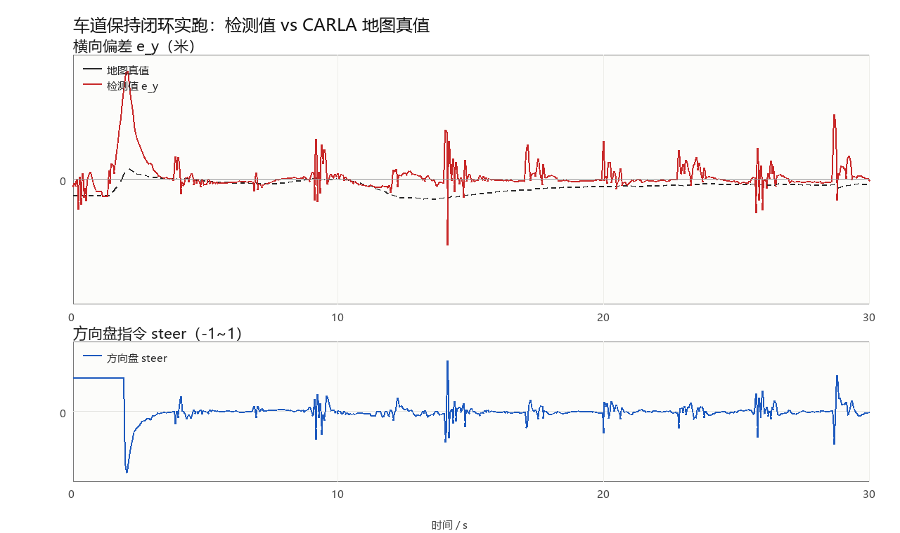

车道保持控制（carla_lane_keeping）
本模块在车道线检测的基础上，把横向偏差与航向偏差闭环成车辆转向指令， 实现车辆自动保持在车道中央行驶。检测部分的原理见车道线检测。
1. 控制结构
采用自动驾驶中最常见的级联式横向控制：
横向偏差 e_y ──┐
├─► PID ──┐
│ ├─► 转向角 delta ──► 车辆
航向偏差 e_psi ─────────── ┘
控制律：
delta = -(Kp·e_y + Ki·∫e_y dt + Kd·de_y/dt) - K_psi·e_psi
1.1 为什么偏差项要取负号
约定（两个符号都在 CARLA 里实测确认过）：
e_y > 0表示车辆在车道中心右侧，此时应该向左修正e_psi > 0表示车头相对车道方向偏右，同样应该向左修正- 控制输出
steering > 0表示向右打方向（carla_msgs/CarlaEgoVehicleControl的约定，实测steer=+0.3会让车辆向右偏移）
因此两项前面都带负号。若实测发现方向相反（不同相机的安装朝向、
或不同的控制接口符号约定），把参数 invert_steering 置为 true 即可，
不需要改代码。
航向项的符号早期是反的：检测输出把
e_psi的符号搞反了， 与地图真值的相关系数只有 −0.97。加上符号后变为 +0.97， 这个坑在lane_detection.py的lane_geometry_with_width里留了完整推导。
1.2 纵向速度策略
纵向是速度闭环，不是开环给一个固定油门：
v_err = target_speed - v_now
throttle = clip(Kv · v_err, 0, 1)
brake = clip(-0.25 · v_err, 0, 0.6) 当 v_err < -0.3 m/s
Kv 对应参数 speed_gain（默认 0.35），v_now 取自里程计
（/carla/ego_vehicle/odometry）；取不到时退化为原来的开环油门，
保证没有里程计的场合也能跑。
早期版本是
throttle = throttle_gain · target_speed的开环式， 实跑时车会一路加速到 14 m/s——那时 4.5 m 的预瞄距离已经不够， 任何横向增益都救不回来，车辆很快冲出路面。改成速度闭环后 车速稳定在 2.5 m/s，横向控制才谈得上收敛。同时横向量与航向量各做一次一阶低通（
filter_alpha，默认 0.35）。 单帧检测本身有 ±0.05~0.1 m 抖动，直接进 PID 会被kd放大成 方向盘打摆（实测 steer 在 ±0.3 之间来回）；加低通后压到 ±0.1 以内。
2. 与车辆控制的对接
CARLA 的转向指令有两种传递方式，本模块同时支持，以便适配不同环境：
| 方式 | 话题 | 消息类型 | 适用场景 |
|---|---|---|---|
| 直接控制 | /carla/ego_vehicle/vehicle_control_cmd |
carla_msgs/CarlaEgoVehicleControl |
已装 carla_msgs（推荐） |
| 间接控制 | /carla/ego_vehicle/twist |
geometry_msgs/Twist |
缺少 carla_msgs 时，配合 carla_twist_to_control 节点 |
节点启动时会检测 carla_msgs 是否可用并自动选择，无需手工配置。
3. 安全设计
横向控制直接操纵车辆转向，因此做了三层保护：
3.1 感知失效保护
控制器以固定频率（默认 20 Hz）输出指令，但只有当感知数据新鲜
（最近 perception_timeout 秒内更新过）且置信度达标时才输出转向。
感知失效时：
- 停止转向输出（避免用过期数据持续打方向）
- 同时复位 PID 积分项——否则偏差累积会在感知恢复瞬间造成转向突变
- 若同时判定为偏离车道，可选择主动刹车（
brake_on_departure）
3.2 PID 积分限幅
积分项被限制在 integral_limit 之内，防止长时间同向偏差导致积分饱和
（积分饱和的典型表现是：偏差反向时车辆需要很长时间才回正）。
3.3 输出限幅
转向输出被限制在 steering_limit 之内，避免极端指令。
此外，检测节点在未稳定检出时不发布横向偏差，从源头避免下游把 误检当成有效测量。这两层是配合关系，缺一不可。
4. 运行
4.1 一键启动检测 + 控制
roslaunch carla_lane_keeping main.launch mode:=both
4.2 单独启动控制器
rosrun carla_lane_keeping lane_keeping_controller.py
4.3 观察控制效果
# 转向量（调试用）
rostopic echo /lane/steering
# 横向偏差，应逐渐收敛到 0 附近
rostopic echo /lane/lateral_offset
# 看实际下发的控制指令
rostopic echo /carla/ego_vehicle/vehicle_control_cmd
5. 话题接口
| 方向 | 话题 | 类型 | 说明 |
|---|---|---|---|
| 订阅 | lane/lateral_offset |
std_msgs/Float32 |
横向偏差（米） |
| 订阅 | lane/heading_error |
std_msgs/Float32 |
航向偏差（弧度） |
| 订阅 | lane/confidence |
std_msgs/Float32 |
置信度 |
| 订阅 | lane/departure |
std_msgs/Bool |
是否偏离车道 |
| 订阅 | /carla/ego_vehicle/odometry |
nav_msgs/Odometry |
当前车速（速度闭环用，可关） |
| 发布 | /carla/ego_vehicle/vehicle_control_cmd |
carla_msgs/CarlaEgoVehicleControl |
车辆控制指令 |
| 发布 | /carla/ego_vehicle/twist |
geometry_msgs/Twist |
备用控制通道 |
| 发布 | lane/steering |
std_msgs/Float32 |
转向量（调试） |
6. 参数整定
参数见 config/control_params.yaml（launch 把它载入 /lane_keeping_controller；
检测段在 config/lane_params.yaml，载入 /lane_detector，两份不能合并）：
| 参数 | 默认 | 作用 |
|---|---|---|
kp / ki / kd |
0.28 / 0.02 / 0.06 | 横向偏差 PID |
k_psi |
0.9 | 航向偏差比例项 |
steering_limit |
0.7 | 转向限幅（CARLA 的 steer 范围 ±1） |
integral_limit |
2.0 | 积分限幅，防饱和 |
filter_alpha |
0.35 | 偏差一阶低通系数，越小越平滑 |
target_speed |
6.0 | 目标车速（m/s） |
speed_gain |
0.35 | 速度闭环增益 throttle = speed_gain·(v_target − v) |
speed_topic |
/carla/ego_vehicle/odometry |
车速来源；置空则退化为开环油门 |
throttle_gain |
0.18 | 开环退化时的油门增益 |
control_rate |
20.0 | 控制输出频率（Hz） |
perception_timeout |
0.5 | 感知超时（s），超时后停止转向 |
invert_steering |
false | 实测转向方向相反时置 true |
整定顺序建议：
| 步骤 | 操作 | 观察 |
|---|---|---|
| 1 | 先只开检测（mode:=detect），把车开到车道中央 |
lateral_offset 应接近 0 |
| 2 | 只调 kp，从小到大，先让车能回到中心 |
车辆出现缓慢来回摆动说明 kp 已够大 |
| 3 | 加入 kd 抑制摆动 |
摆动幅度减小、收敛加快 |
| 4 | 最后加很小的 ki（约 kp 的 1/10）消除稳态误差 |
不再有固定偏差 |
| 5 | 调 k_psi 让车头与车道方向对齐 |
车辆不再斜着走 |
| 6 | 若方向盘仍在抖，把 filter_alpha 调小 |
lane/steering 的摆幅收窄 |
整定注意：
ki过大是横向控制最常见的问题，会造成低频摆动，建议从 0 开始- 若车辆持续来回大幅摆动，先降低
kp而不是加kd - 转向方向相反时，先检查
invert_steering，不要用负的kp - 先把
speed_gain调对再调横向参数：车速不稳时横向表现会一直变
7. 控制安全提示
- 首次测试请把
target_speed设小（如 2.0 m/s），确认方向正确后再提高 - 建议在
brake_on_departure:=true下先跑一轮，确认偏离判定有效 - 控制器的输出频率（
control_rate）不要低于车桥接收指令的期望频率， 否则桥接层可能因超时而自动接管
8. 后续改进方向
- 前馈控制：利用车道曲率直接给出前馈转角，减少弯道上的跟踪误差
- 模型预测控制（MPC）：显式处理转向速率约束与预测时域
- 速度自适应：按曲率自动限速，弯道减速
- 驾驶员接管检测：检测到人工输入时自动让出控制权
9. 闭环实跑验证（CARLA）
前面几节讲的是控制律本身，这一节给出在真实 CARLA 里跑出来的闭环结果——
检测不再是单独跑一遍，而是每帧把 e_y / e_psi 送进控制律，再把
steer / throttle 下发给车辆。
9.1 怎么得到「真值」
自洽检查（比如「左右线必须分居画面两侧」）只能排除荒谬值，证明不了偏差量本身 对不对。所以验证脚本每帧额外做一件事：向 CARLA 地图查询车辆所在车道的中心线，
wp = world.get_map().get_waypoint(vehicle.get_location(),
project_to_road=True,
lane_type=carla.LaneType.Driving)
再由车道朝向算出车辆相对车道中心的横向距离 e_y 与航向夹角 e_psi。
这个值完全来自地图，不经过任何检测环节，因此可以作为独立真值。
9.2 实验设置
| 项目 | 取值 |
|---|---|
| 仿真器 | CARLA 0.9.16，Town10HD |
| 相机 | 前视 RGB，800×600，水平 FOV 90°，离地 1.70 m，俯角 8° |
| 起点 | 标准生成点 #10（路段中部，直道，非路口非弯道） |
| 初始扰动 | 前 2 s 开环 steer=+0.06，把车推出车道中心 |
| 目标车速 | 3 m/s |
| 时长 | 30 s（20 Hz，600 帧） |
| 控制参数 | kp=0.28, ki=0.02, kd=0.06, k_psi=0.9, filter_alpha=0.35 |
9.3 结果
| 指标 | 数值 |
|---|---|
| 闭环帧 / 总帧 | 556 / 600（其余是 2 s 扰动段与 5 帧短时感知失效） |
| 检测值与真值的偏差 | 平均绝对误差 0.025 m，均值偏差 +0.022 m，最大 0.233 m |
| 稳定后 |e_y| | 0.014 m（取最后 111 帧） |
| 扰动结束后回到 ±0.25 m 内 | 0.15 s |
| 落在 ±0.25 m 内的帧占比 | 99.6% |
| 转向指令范围 | [-0.107, +0.090]（归一化，满量程 ±1） |
| 平均车速 | 2.53 m/s |

上：红色是检测输出的横向偏差，黑色虚线是地图真值；下：对应的方向盘指令。
从图里能看出三件事：
- 第 2 秒扰动结束、闭环接管的瞬间，偏差被推到 0.26 m，随后 0.15 s 内回到 ±0.25 m 以内，之后一直贴着真值走，稳态误差 1.4 cm；
- 检测曲线有若干 2~3 帧的短促尖峰（幅度 0.1~0.15 m），来源是双黄线的两条线 在鸟瞰图里相距仅 0.25 m，个别帧的拟合落到了外侧那条上。这类尖峰被低通 挡在控制环之外——下图的转向指令全程没有超过 0.11；
- 转向指令平缓且没有持续偏向一侧，说明既没有稳态偏差，也没有积分饱和。
9.4 已知限制（如实记录）
- 闭环没有在 ROS 话题链路下跑过。本机 CARLA 0.9.16 与仓库内桥接要求的
0.9.13 不兼容，验证走的是不需要 ROS 的
tools/run_on_carla.py（见 9.5 节）。感知→控制的数据流、控制律、参数都与 ROS 节点相同， 但"经 rospy 收发、由carla_ros_bridge下发"这一段尚未联调。 - 车身俯仰/侧倾未建模。相机模型假设俯仰角恒为 8°，实际车辆在大油门或
急打方向时车身会抬头/侧倾 1°~2°，这段时间
e_y会有 0.1~0.4 m 的短时偏差。 如果要做更高精度的验证，应当用 TF 把相机相对车体的实时姿态喂进模型。 - 只验证了城市直道与缓弯，没有做高速（>8 m/s）与急弯的工况。
9.3 节那组数据对应的是直道（#10）。同一套参数换到弯道（#20）差别很大：
实测 299 帧、闭环 185 帧，与地图真值的平均绝对误差 0.225 m、89.7% 的帧落在
±0.25 m 内（直道是 0.025 m / 99.6%），t≈14 s 后检测置信度掉到 0、车速降到 0.3 m/s
以下提前结束。弯道上检测的航向偏差有 6°~8° 的常值偏置（直道约 0.3°），
经
-k_psi变成持续转向，靠反馈纠不回来——这正是下面缺前馈项的后果。 引用 9.3 节的数字时请连同场景一起说明，它不外推到弯道。 - 控制器没有前馈项，弯道上靠反馈硬纠，速度一高就会出现稳态偏差； 这也是下一节的第一条改进方向。
9.5 复现方式
验证脚本在包的 tools/ 下，只依赖 numpy 与 carla Python 包，不需要 ROS。
有一点需要说清楚：这次闭环没有走 carla_ros_bridge。原因是本机 CARLA 是
0.9.16，而仓库内桥接声明要求 0.9.13（见检测文档 3.6 节），直连会报 API 不兼容。
所以 run_on_carla.py 把控制律按 ROS 控制器里的同一套公式（PID + 航向项 +
一阶低通 + 速度闭环）重写了一遍，直接用 CARLA 的 VehicleControl 下发，
绕开桥接。这意味着验证的是控制律与感知的配合，而不是 ROS 话题链路；
后者需要 0.9.13 环境，9.4 节把它列为未完成项。
# 1) 启动 CARLA 服务器（另开一个终端）
./CarlaUE4.sh -quality-level=Low
# 2) 跑闭环，结果图与逐帧 CSV 落在 --outdir 指定的目录
cd src/ground/carla_lane_keeping
python3 tools/run_on_carla.py --closed-loop --duration 30 --spawn-index 10 \
--target-speed 3 --disturbance 0.06 --disturbance-sec 2.0 \
--outdir out_final
# 3) 画收敛曲线（可选，需要 Pillow）
python3 tools/plot_trace.py out_final/lateral_trace.csv closed_loop.png
终端会逐秒打印检测值、真值、转向量与车速，结束时给出 9.3 节的统计量；
out_final/lateral_trace.csv 保留了每一帧的原始数据，可以自行复核。